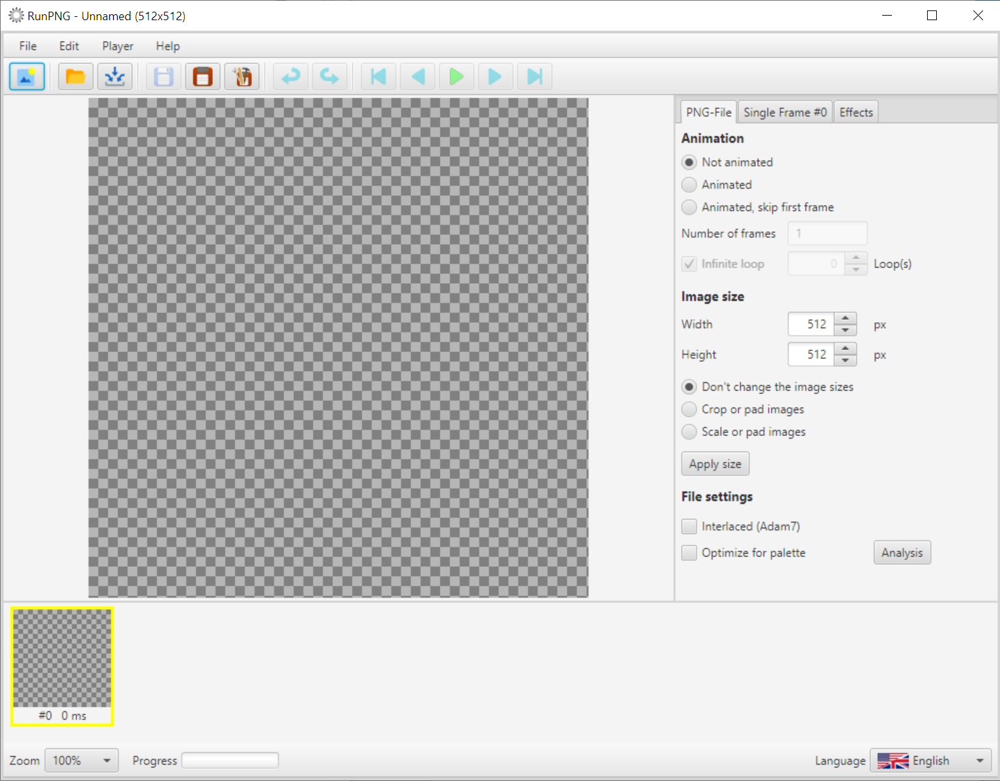
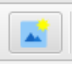
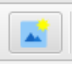
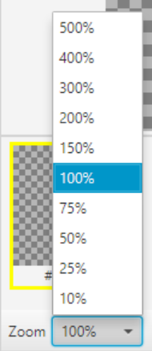
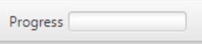
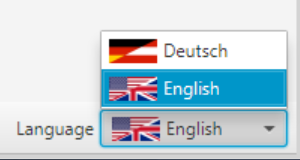

Structure of the User Interface
RunPNG is set up as a classic desktop application. At the top the title line with the file name and the dimensions of the overall image, then the menu bar with all functions, toolbar with pictograms for quick access without a menu, in the middle left the currently selected image, right a dialog bar with tabs arranged for various settings, below a bar for the loaded single images and a useful footer at the bottom.
More about the individual elements later. A few general functions are briefly presented here.
File New
 
With the menu item New or the associated button in the toolbar, the application is reset to its initial state. However, if there are unsaved changes, the user is asked whether they should be saved or whether the process should be canceled.
Undo and Redo
Almost all operating steps - except e.g. File New, File Open ... or similar - can be undone by clicking on the menu item or the associated button on the toolbar (alternatively key combination CTRL+Z). An operating step that has been undone can also be redone using the menu or button (alternatively the key combination CTRL+Y).
Zoom

The zoom control in the footer relates to the current image display in the middle. Some pictures are rather small, while others are pretty large. So the view can be adjusted with the zoom control.
Progress Bar

A small and inconspicuous Progress bar. This shows the progress of actions like opening or saving files with a growing blue bar. When the action is complete, the color will change to green and then gradually fade away.
Language

Last but not least the Language setting at the right of the footer. RunPNG is designed to be multilingual right from the start of development.
At the moment, however, only German or English is offered. The application is based on the set system language with priority for English. This means, if
the system is set to a language other than German, RunPNG starts in English. The language can be switched dynamically at runtime using the selection list.